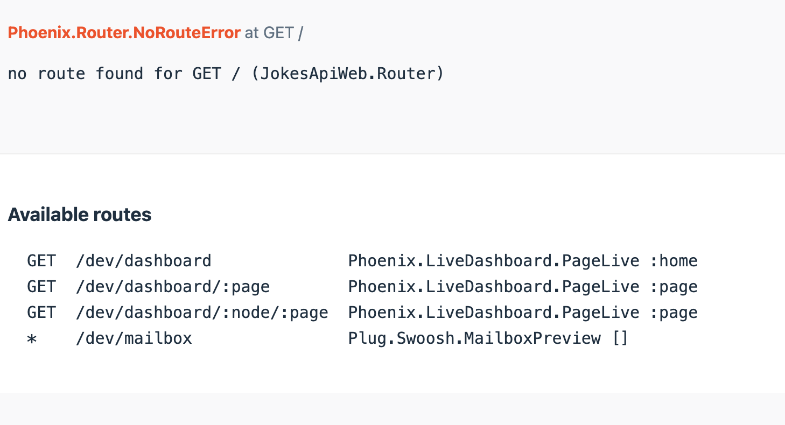

Phoenix is a web development framework written in Elixir that uses a server-side model-view-controller (MVC) pattern. It’s perfect for building highly scalable and fault-tolerant applications. In this article, we’ll explore Phoenix by building a simple RESTful API with it. But not just any API - we’ll build a dad-joke machine! We’ll show you how to generate schemas and controllers in one fell swoop, add new fields to an API endpoint, and rediscover the ancient wisdom of dad-jokers before us.
Reading time: 8 minutes
What do you get when you cross a phoenix and a unicorn? A magical mystery tour!
Project Setup
To get smooth sailing with this discovery we will be using Elixir 1.14 and Phoenix v1.7. If you don’t have it setup already you can follow the instructions over at hexdocs.
To create a new Phoenix project suitable for an API we will run the following command:
mix phx.new jokes_api --no-html --no-assets
Here's the anatomy of the command:
| mix | The Elixir build tool and dependency chief-coordinator |
| phx.new | A Mix build task that creates a Phoenix project |
| jokes_api | Our project’s name |
| --no-html | instructs phx.new to not create any templates for us |
| --no-assets | instructs phx.new to not create any static assets (such as CSS- and JS-files) |
After creating the project structure with all the necessary dependencies we can take our next step. As we will be doing some reading and writing to a database, let's set it up. We want a PostgreSQL database for the project, so let's add a docker-container for it. We move in to the project directory and create a docker-compose.yaml:
version: "3.7"
services:
db:
image: postgres
environment:
POSTGRES_USER: postgres
POSTGRES_PASSWORD: postgres
ports:
- "5432:5432"
volumes:
- pg_db:/var/lib/postgresql/data
volumes:
pg_db:
We specify that we want the database to have a user called postgres and the password postgres. We need to update (or confirm) that our Phoenix project has these credentails as well. We find the configuration for this in config/dev.exs
config :jokes_api, JokesApi.Repo,
username: "postgres",
password: "postgres",
hostname: "localhost",
database: "jokes_api_dev",
stacktrace: true,
show_sensitive_data_on_connection_error: true,
pool_size: 10
It’s looking good. It has the correct credentials. It's also referenceing a database, jokes_api_dev, which we will create now. From the command line:
mix ecto.create
ecto is the database schema manager that Phoenix relies on. It creates our databases and database schemas.
ecto.createis themixbuild task which will create the database defined in our configuration.ectocan be used with other types of databases as well, such as MySQL and SQLite3.
The anatomy of a joke
For our dad-joke machine to get going, we will want a schema for it. Let's imagine that a joke has text-content, and that we will want to be able to rate it. Either we like it, or we dislike it. Our model should be something like this:
| field | type |
|---|---|
| text | text |
| likes | integer |
| dislikes | integer |
What do you call a fish with no eye?
Fsh

We will now create both the database schema and the API schema for our Joke model. It's all done with a single command from the terminal:
mix phx.gen.json Jokes Joke jokes text:text likes:integer dislikes:integer
There are a lot of jokes going around, so what do they mean in this context? Again we are using mix, our Elixir build tool. We are employing Phoenix's phx.gen.json for this task. It will create a controller, JSON API-schema, and via ecto it will also create a migration file to update the database schema. Jokes Joke will define the namespace for our model module. The name for its database table is jokes. And text:text likes:integer dislikes:integer will define the model's fields and their types.
With a migration file we can update the database. We do that with:
mix ecto.migrate
We have now defined how a Joke should look like in the API as well as prepared our database to handle it. We are ready for our next steps.
A server walks into a bar
We may want to view our small project to get a feel for how far we have come. We will need a server to show our project. Thankfully, Phoenix has a great server that can be used in development as well as in production. We run it with this command:
mix phx.server
This will per default serve our application to localhost:4000. As we do not have any HTML templates or assets, we will see Phoenix's development debug view. Which will serve us great here. This is our view:

From what we see here, it does not look like we have any new API-endpoints. But we can easily expose the JSON-schema defined for us. We have to map them to a new route, is all.
In lib/jokes_api_web/router.ex we will expose the endpoints we like on a module called JokeController (which were generated by our earlier mix task):
scope "/api", JokesApiWeb do
pipe_through :api
resources "/jokes", JokeController, except: [:new, :edit, :delete]
end
Saving the file and reviewing what we have shows us a bunch of new routes:

We can try to create a new file now. I’m using Postman, but you might as well use CRUD.
What do you feel about this: “There are 10 types of people in the world: those who understand binary, and those who don’t”
Let’s try adding it to the database. We make a POST request to http://localhost:4000/api/jokes with the following payload:
{
"joke": {
"text": "There are 10 types of people in the world: those who understand binary, and those who don’t."
}
}
What may the result be? Here’s what:
{
"errors": {
"dislikes": [
"can't be blank"
],
"likes": [
"can't be blank"
]
}
}
Our model requires dislikes and likes to be set. But we don’t want that. We want these to start off with 0 and only be modified incrementally. A way to do that is to define a default value for the model.
lib/jokes_api/jokes/joke.ex:
schema "jokes" do
field :dislikes, :integer, default: 0
field :likes, :integer, default: 0
field :text, :string
timestamps()
end
When we retry our POST-request this will be the result:
{
"data": {
"dislikes": 0,
"id": 1,
"likes": 0,
"text": "There are 10 types of people in the world: those who understand binary, and those who don’t."
}
}
Success!
More routes and fields!
Let’s add two new endpoints. One for disliking a joke, and another for liking it!
In the controller lib/jokes_api_web/controllers/joke_controller.ex:
def like(conn, %{"id" => id}) do
joke = Jokes.get_joke!(id)
likes = joke.likes + 1
joke_params = %{likes: likes}
with {:ok, %Joke{} = joke} <- Jokes.update_joke(joke, joke_params) do
render(conn, :show, joke: joke)
end
end
def dislike(conn, %{"id" => id}) do
joke = Jokes.get_joke!(id)
dislikes = joke.dislikes + 1
joke_params = %{dislikes: dislikes}
with {:ok, %Joke{} = joke} <- Jokes.update_joke(joke, joke_params) do
render(conn, :show, joke: joke)
end
end
With these new endpoints we can now increment the dislikes or the likes to our hearts content.
And for a final touch. Let’s add a field to the JSON-response that shows the score, that is the difference between likes and dislikes. The API schema is defined in lib/jokes_api_web/controllers/joke_json.ex. Let’s update it:
defp data(%Joke{} = joke) do
%{
id: joke.id,
text: joke.text,
likes: joke.likes,
dislikes: joke.dislikes,
score: joke.likes - joke.dislikes
}
end
We can like any joke we like by making a PATCH request to http://localhost:4000/api/jokes/1/like. This will increment the joke's likes. Similarly, we can dislike a joke by substituting like for dislike in the URL. After a couple of votes we can see its score at 4:
{
"data": {
"dislikes": 1,
"id": 1,
"likes": 5,
"score": 4,
"text": "There are 10 types of people in the world: those who understand binary, and those who don’t."
}
}
We have successfully created a simple API with potential of becoming a fearsome dad-jokes machine. A couple of commands and some modifications to the code has gotten us here. In my opinion a pretty swell experience. With a tool like Phoenix it's easy to feel top of your game.
I'm outstanding in my field!